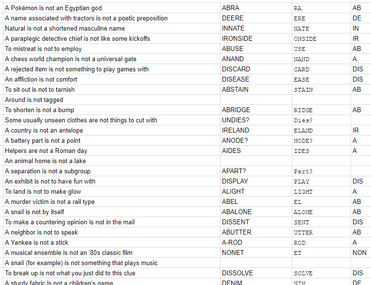

This puzzle presents a list of sentences all in the form "ITEM A is not ITEM B". Some of the items are kind of generic--there are a lot of Egyptian gods, and even more Pokémon--but some of them are rather specific, particularly if you're good at crosswords. "A name associated with tractors" is probably John Deere, for instance. Get enough of the clues, and you may notice that it's possible to find answers so that ITEM A is always ITEM B plus some kind of prefix, so that, for example, "To mistreat is not to employ" can be rewritten "ABUSE is not USE" and "A paraplegic detective chief is not like some kickoffs" gives "IRONSIDES is not ONSIDES". This is too good to just be a coincidence. It's not clear yet which part of this will lead to the final answer, but we can start writing down every answer and the prefix and see if anything comes out. (I always do this in a spreadsheet, especially if I'm collaborating with people online, a Word document or even just paper would work.)
| A Pokémon is not an Egyptian god | ABRA? | RA? | AB? |
| A name associated with tractors is not a poetic preposition | DEERE | ERE? | DE |
| Natural is not a shortened masculine name | |||
| A paraplegic detective chief is not like some kickoffs | IRONSIDES | ONSIDES | IR |
| To mistreat is not to employ | ABUSE | USE | AB |
| A chess world champion is not a universal gate | GRANDMASTER? KASPAROV? | ||
| A rejected item is not something to play games with | |||
| An affliction is not comfort | DISEASE | EASE | DIS |
| ... | ... | ... | ... |
There are some guesses in our table, and that's OK; fingers-crossed we'll get more solid answers in there soon. Now, take a look at that list of prefixes. Notice anything?
These are all prefixes that usually used to form opposites! ABnormal, DEpopulate, and so forth. Now the theme of the puzzle (and the reason for the strange "...is not..." phrasing) becomes clear. We can use this pattern to help fill in gaps, starting with "Natural" being IN-NATE.
Many puzzles have some sort of theme, incidentally, especially if it's just a list of clues, as it is here. You could have a completely unrelated list of words, but then a) there would be no confirmation that the answers are correct (so "mistreat" is ABUSE and not, say, HARM) and b) it would pretty uninteresting. Part of the joy of puzzle solving is in finding patterns in chaos.
As we fill in more answers, we should also be thinking about how we're going to get an answer out of this. Remember that the goal with Mystery Hunt-style puzzles is to get a word or short phrase. Since the prefixes repeat and are pretty constrained, let's see if we can spell something with the first letters of the ITEMs B.
There are some gaps, but it definitely looks like English. RENOUNCES_RDENI_PPLEASURE_SN... Eventually, we can Wheel of Fortune out a clue phrase: RENOUNCES OR DENIES PLEASURE IS NOT THE ANSWER. Some time with a dictionary will lead to ABNEGATES as "renounces or denies pleasure", so following the mechanics of the puzzle, the answer is the (very thematic) NEGATES.